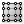

 Surface Points
Component Index > Surface > Surface > Analysis > SrfPt
Get the control-points of a Nurbs Surface
Inputs
| Name | ID | Description | Type |
|---|---|---|---|
| Surface | S | Surface for control-point extraction | Surface |
Outputs
| Name | ID | Description | Type |
|---|---|---|---|
| Points | P | Control point locations | List of Point |
| Weights | W | Control point weights | List of Number |
| Greville | G | Greville uv points | List of Point |
| U Count | U | Number of points along U direction | Integer |
| V Count | V | Number of points along V direction | Integer |
Copyright © 2016 Robert McNeel & Associates.